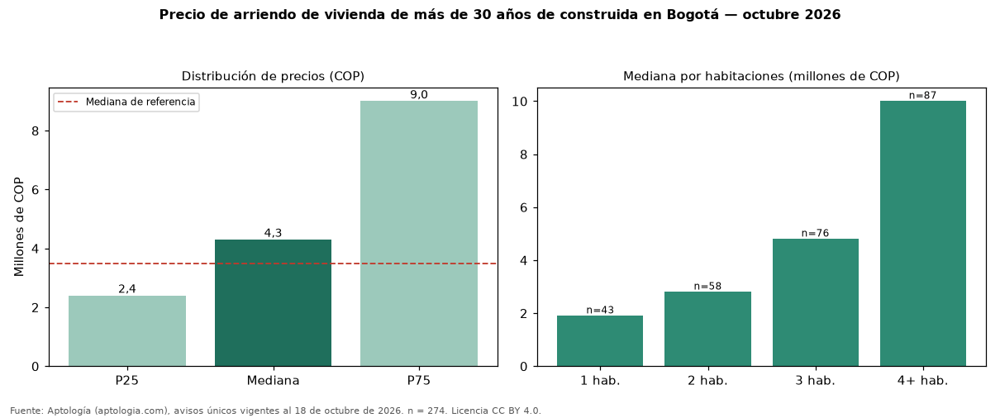

Precio de arriendo de vivienda de más de 30 años de construida en Bogotá — octubre 2026
Con 274 avisos únicos, el canon mediano de vivienda de más de 30 años de construida en arriendo en Bogotá es COP 4.300.000 al mes. Eso es 23 % más que la mediana de toda la oferta de arriendo en Bogotá (COP 3.495.000). El rango intercuartílico va de COP 2.403.250 a COP 9.000.000 (razón 3,7). Por metro cuadrado, la mediana es COP 36.912/m² (−24 % frente a COP 48.571/m²). Cruzando con la oferta de venta equivalente, la rentabilidad bruta implícita es 8,1 % anual. Por habitaciones: 1 habitación, COP 1.900.000 (n = 43); 2 habitaciones, COP 2.800.000 (n = 58); 3 habitaciones, COP 4.800.000 (n = 76); 4 o más habitaciones, COP 10 millones (n = 87). El área mediana es 112 m² (referencia: 70 m²). Datos abiertos CC BY 4.0 de Aptología; fuente y búsqueda de inmuebles: https://www.aptologia.com/arriendo/bogota. Archivos: PDF de 2 páginas, CSV con las cifras y gráfica PNG.

| Avisos únicos | 274 |
|---|---|
| Percentil 25 | COP 2.403.250 |
| Mediana | COP 4.300.000 |
| Percentil 75 | COP 9.000.000 |
| Mediana por m² | COP 36.911 |
Fuente: avisos vigentes de portales inmobiliarios recopilados por Aptología, deduplicados (mínimo 30 avisos únicos por celda). Precios pedidos, no cerrados. Fecha: 2026-10-18.